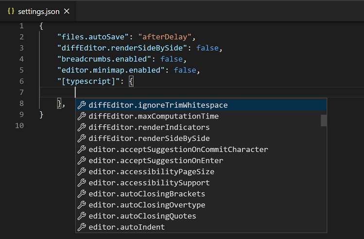

User and workspace settings
You can configure LTSerialTool to your liking through its various settings. Nearly every part of VS Code's editor, user interface, and functional behavior has options you can modify.
VS Code provides different scopes for settings:
- User settings - Settings that apply globally to any instance of VS Code you open.
- Workspace settings - Settings stored inside your workspace and only apply when the workspace is opened.
VS Code stores setting values in a settings JSON file. You can change settings values either by editing the settings JSON file or by using the Settings editor, which provides a graphical interface to manage settings.
User settings
User settings are your personal settings for customizing VS Code. These settings apply globally to any instance of VS Code you open. For example, if you set the editor font size to 14 in your user settings, it will be 14 in all instances of VS Code on your computer.
You can access your user settings in a few ways:
- Select the Preferences: Open User Settings command in the Command Palette (P (Windows, Linux Ctrl+Shift+P))
- Select the User tab in the Settings editor (, (Windows, Linux Ctrl+,))
- Select the Preferences: Open User Settings (JSON) command in the Command Palette (P (Windows, Linux Ctrl+Shift+P))
Workspace settings
Workspace settings are specific to a project and override user settings. If you have specific settings that you want to apply to a specific project, you can use workspace settings. For example, for a backend server project, you might want to set the files.exclude setting to exclude the node_modules folder from the File Explorer.
A VS Code "workspace" is usually just your project root folder. You can also have more than one root folder in a VS Code workspace through a feature called Multi-root workspaces. Get more info about VS Code workspaces.
VS Code stores workspace settings at the root of the project in a .vscode folder. This makes it easy to share settings with others in a version-controlled (for example, Git) project.
You can access the workspace settings in a few ways:
- Select the Preferences: Open Workspace Settings command in the Command Palette (P (Windows, Linux Ctrl+Shift+P))
- Select the Workspace tab in the Settings editor (, (Windows, Linux Ctrl+,))
- Select the Preferences: Open Workspace Settings (JSON) command in the Command Palette (P (Windows, Linux Ctrl+Shift+P))

Not all user settings are available as workspace settings. For example, application-wide settings related to updates and security can not be overridden by Workspace settings.
Settings editor
The Settings editor provides a graphical interface to manage both user and workspace settings. To open the Settings editor, navigate to File > Preferences > Settings. Alternately, open the Settings editor from the Command Palette (P (Windows, Linux Ctrl+Shift+P)) with Preferences: Open Settings or use the keyboard shortcut (, (Windows, Linux Ctrl+,)).
When you open the Settings editor, you can search and discover the settings you are looking for. When you search using the search bar, the Settings editor filters the settings to only show those that match your criteria. This makes finding settings quick and easy.

VS Code applies changes to settings directly as you change them. You can identify settings that you modified by the colored bar on the left of the setting, similar to modified lines in the editor.
In the example below, the Side Bar location and File Icon Theme were changed.

The gear icon alongside the setting (F9 (Windows, Linux Shift+F9)) opens a context menu with options to reset a setting to its default value, and to copy the setting ID, copy a JSON name-value pair, or copy the settings URL.

A settings URL enables you to navigate directly to a specific setting in the Settings editor from the browser. The URL is in the format vscode://settings/<settingName>, where <settingName> is the ID of the setting you want to navigate to. For example, to navigate to the workbench.colorTheme setting, use the URL vscode://settings/workbench.colorTheme.
Settings groups
Settings are represented in groups, so that you can navigate to related settings quickly. There is a Commonly Used group at the top, which shows popular customization settings.
In the following example, the source control settings are focused by selecting Source Control in the tree view.

VS Code extensions can also add their own custom settings, and those settings are visible under an Extensions section.
Settings editor filters
The Settings editor search bar has several filters to make it easier to manage your settings. To the right of the search bar is a filter button with a funnel icon that provides options to easily add a filter to the search bar.
Modified settings
To check which settings you have configured, there is a @modified filter in the search bar. A setting shows up under this filter if its value differs from the default value, or if its value is explicitly set in the respective settings JSON file.
This filter can be useful if you have forgotten whether you configured a setting, or if the editor is not behaving as you expect because you accidentally configured a setting.

Other filters
There are several other handy filters to help with searching through settings. Type the @ symbol in the search bar to discover the different filters.

Here are some of the filters available:
@ext- Settings specific to an extension. You provide the extension ID such as@ext:ms-python.python.@feature- Settings specific to a Features subgroup. For example,@feature:explorershows settings of the File Explorer.@id- Find a setting based on the setting ID. For example,@id:workbench.activityBar.visible.@lang- Apply a language filter based on a language ID. For example,@lang:typescript. See Language-specific editor settings for more details.@tag- Settings specific to a system of VS Code. For example,@tag:workspaceTrustfor settings related to Workspace Trust, or@tag:accessibilityfor settings related to accessibility.
The search bar remembers your settings search queries and supports Undo/Redo (Z (Windows, Linux Ctrl+Z)/Z (Windows, Linux Ctrl+Y)). You can quickly clear a search term or filter with the Clear Settings Search Input button at the right of the search bar.

Extension settings
Installed VS Code extensions can also contribute their own settings, which you can review under the Extensions section of the Settings editor.
You can also review an extension's settings from the Extensions view (X (Windows, Linux Ctrl+Shift+X)) by selecting the extension and reviewing the Feature Contributions tab.

Extension authors can learn more about adding custom settings in the configuration contribution point documentation.
Settings JSON file
VS Code stores setting values in a settings.json file. The Settings editor is the user interface that enables you to review and modify setting values that are stored in a settings.json file.
You can also review and edit the settings.json file directly by opening it in the editor with the Preferences: Open User Settings (JSON) or Preferences: Open Workspace Settings (JSON) command in the Command Palette (P (Windows, Linux Ctrl+Shift+P)).
Settings are written as JSON by specifying the setting ID and value. You can quickly copy the corresponding JSON name-value pair for a setting by selecting the setting's gear icon in the Settings editor, and then selecting the Copy Setting as JSON action.

The settings.json file has full IntelliSense with smart completions for settings and values and description hovers. Errors due to incorrect setting names or JSON formatting are also highlighted.

Some settings can only be edited in settings.json such as Workbench: Color Customizations and show an Edit in settings.json link in the Settings editor.

If you prefer to always work directly with settings.json, you can set workbench.settings.editor to json. Then, File > Preferences > Settings and the keybinding , (Windows, Linux Ctrl+,) always open the settings.json file and not the Setting editor UI.
Settings file locations
User settings.json location
Depending on your platform, the user settings file is located here:
- Windows
%APPDATA%\Code\User\settings.json - macOS
$HOME/Library/Application\ Support/Code/User/settings.json - Linux
$HOME/.config/Code/User/settings.json
Workspace settings.json location
The workspace settings file is located under the .vscode folder in your root folder. When you add a Workspace Settings settings.json file to your project or source control, the settings for the project will be shared by all users of that project.

For a Multi-root Workspace, workspace settings are located inside the workspace configuration file.
Reset settings
You can always reset a setting to the default value by hovering over a setting to show the gear icon, clicking on the gear icon, and then selecting the Reset Setting action.
While you can reset settings individually via the Settings editor, you can reset all changed settings by opening settings.json and deleting the entries between the braces {}. Be careful since there is no way to recover your previous setting values.
Language specific editor settings
One way to customize language-specific settings is by opening the Settings editor, pressing on the filter button, and selecting the language option to add a language filter. Alternatively, one can directly type a language filter of the form @lang:languageId into the search widget. The settings that show up will be configurable for that specific language, and will show the setting value specific to that language, if applicable.
When you modify a setting while there is a language filter in place, the setting is configured in the given scope for that language.
For example, when modifying the user-scope diffEditor.codeLens setting while there is a @lang:css filter in the search widget, the Settings editor saves the new value to the CSS-specific section of the user settings file.

If you enter more than one language filter in the search widget, the current behavior is that only the first language filter will be used.
Another way to customize your editor by language is by running the global command Preferences: Configure Language Specific Settings (command ID: workbench.action.configureLanguageBasedSettings) from the Command Palette (P (Windows, Linux Ctrl+Shift+P)) which opens the language picker. Select the language you want. Then, the Settings editor opens with a language filter for the selected language, which allows you to modify language-specific settings for that language. Though, if you have the workbench.settings.editor setting set to json, then the settings.json file opens with a new language entry where you can add applicable settings.

Select the language via the dropdown:

Now you can start editing settings specifically for that language:

Or, if workbench.settings.editor is set to json, now you can start adding language-specific settings to your user settings:

If you have a file open and you want to customize the editor for this file type, select the Language Mode in the Status Bar to the bottom-right of the VS Code window. This opens the Language Mode picker with an option Configure 'language_name' language based settings. Selecting this opens your user settings.json with the language entry where you can add applicable settings.
Language-specific editor settings always override non-language-specific editor settings, even if the non-language-specific setting has a narrower scope. For example, language-specific user settings override non-language-specific workspace settings.
You can scope language-specific settings to the workspace by placing them in the workspace settings just like other settings. If you have settings defined for the same language in both user and workspace scopes, then they are merged by giving precedence to the ones defined in the workspace.
The following example can be pasted into a settings JSON file to customize editor settings for the typescript and markdown language modes.
{
"[typescript]": {
"editor.formatOnSave": true,
"editor.formatOnPaste": true
},
"[markdown]": {
"editor.formatOnSave": true,
"editor.wordWrap": "on",
"editor.renderWhitespace": "all",
"editor.acceptSuggestionOnEnter": "off"
}
}
You can use IntelliSense in settings.json to help you find language-specific settings. All editor settings and some non-editor settings are supported. Some languages have default language-specific settings already set, which you can review in defaultSettings.json by running the Preferences: Open Default Settings command.
Multiple language-specific editor settings
You can configure language specific editor settings for multiple languages at once. The following example shows how you can customize settings for javascript and typescript languages together in your settings.json file:
"[javascript][typescript]": {
"editor.maxTokenizationLineLength": 2500
}
Profile settings
You can use profiles in VS Code to create sets of customizations and quickly switch between them. For example, they are a great way to customize VS Code for a specific programming language.
When you switch to a profile, the user settings are scoped to only that profile. When you switch to another profile, the user settings of that other profile are applied. This way, you can have different settings for different profiles.
The user settings JSON file for a profile is located in the following directory:
- Windows
%APPDATA%\Code\User\profiles\<profile ID>\settings.json - macOS
$HOME/Library/Application\ Support/Code/User/profiles/<profile ID>/settings.json - Linux
$HOME/.config/Code/User/profiles/<profile ID>/settings.json
The <profile ID> is the unique identifier of the profile. For each profile that overrides settings, there will be a corresponding profile settings file.
The settings.json file for a profile is only created when you modify a setting for that profile.
When you're using a non-default profile, you can access the settings.json file that is associated with the default profile by using the Preferences: Open Application Settings (JSON) command in the Command Palette (P (Windows, Linux Ctrl+Shift+P)).
Settings precedence
Configurations can be overridden at multiple levels by the different setting scopes. In the following list, later scopes override earlier scopes:
- Default settings - This scope represents the default unconfigured setting values.
- User settings - Apply globally to all VS Code instances.
- Remote settings - Apply to a remote machine opened by a user.
- Workspace settings - Apply to the open folder or workspace.
- Workspace Folder settings - Apply to a specific folder of a multi-root workspace.
- Language-specific default settings - These are language-specific default values that can be contributed by extensions.
- Language-specific user settings - Same as User settings, but specific to a language.
- Language-specific remote settings - Same as Remote settings, but specific to a language.
- Language-specific workspace settings - Same as Workspace settings, but specific to a language.
- Language-specific workspace folder settings - Same as Workspace Folder settings, but specific to a language.
- Policy settings - Set by the system administrator, these values always override other setting values.
Setting values can be of various types:
- String -
"files.autoSave": "afterDelay" - Boolean -
"editor.minimap.enabled": true - Number -
"files.autoSaveDelay": 1000 - Array -
"editor.rulers": [] - Object -
"search.exclude": { "**/node_modules": true, "**/bower_components": true }
Values with primitive types and Array types are overridden, meaning a configured value in a scope that takes precedence over another scope is used instead of the value in the other scope. But, values with Object types are merged.
For example, workbench.colorCustomizations takes an Object that specifies a group of UI elements and their desired colors. If your user settings set the editor backgrounds to blue and green:
"workbench.colorCustomizations": {
"editor.background": "#000088",
"editor.selectionBackground": "#008800"
}
And your open workspace settings set the editor foreground to red:
"workbench.colorCustomizations": {
"editor.foreground": "#880000",
"editor.selectionBackground": "#00FF00"
}
The result, when that workspace is open, is the combination of those two color customizations, as if you had specified:
"workbench.colorCustomizations": {
"editor.background": "#000088",
"editor.selectionBackground": "#00FF00",
"editor.foreground": "#880000"
}
If there are conflicting values, such as editor.selectionBackground in the example above, the usual override behavior occurs, with workspace values taking precedence over user values, and language-specific values taking precedence over non-language-specific values.
Note about multiple language specific settings
If you are using multiple language-specific settings, be aware that language-specific settings are merged and precedence is set based on the full language string (for example "[typescript][javascript]") and not the individual language IDs (typescript and javascript). This means that for example, a "[typescript][javascript]" workspace setting will not override a "[javascript]" user setting.
Settings and security
Some settings allow you to specify an executable that VS Code will run to perform certain operations. For example, you can choose which shell the Integrated Terminal should use. For enhanced security, such settings can only be defined in user settings and not at workspace scope.
Here is the list of settings not supported in workspace settings:
The first time you open a workspace that defines any of these settings, VS Code will warn you and then always ignore the values after that.
Settings Sync
You can share your user settings across your VS Code instances with the Settings Sync feature. This feature lets you share settings, keyboard shortcuts, and installed extensions across your VS Code installs on various machines. You can enable Settings Sync via the Backup and Sync Settings command on the right of the Settings editor or on the Accounts Activity Bar context menu.
You can learn more about turning on and configuring Settings Sync in the Settings Sync user guide.
VS Code does not synchronize your extensions to or from a remote window, such as when you're connected to SSH, a development container (devcontainer), or WSL.
Feature lifecycle
Features and their corresponding settings can be in one of the following states. Depending on the state, you might be cautious about using the feature or setting in your workflow.
-
Experimental - Exploratory features available for early adopters. These features might change or be removed in the future. In the Settings editor, these settings have an
Experimentallabel. You can also search experimental settings by entering@tag:experimentalin the search box.
-
Preview - Preview features and settings have the final functionality but might still be iterated on for stability and polishing. Usually, preview features are disabled by default. In the Settings editor, these settings have an
Previewlabel. You can also search preview settings by entering@tag:previewin the search box.
-
Stable - The feature is stable and fully supported in VS Code.
Experimental and preview features enable you to try out new features and provide feedback. Share your feedback in our VS Code issues.
Related resources
Common questions
VS Code says "Unable to write settings."
If you try to change a setting (for example turning on Auto Save or selecting a new Color Theme) and you see "Unable to write into user settings. Please open user settings to correct errors/warnings in it and try again.", it means your settings.json file is ill-formed or has errors. The error can be as simple as a missing comma or incorrect setting value. Open the settings.json file with the Preferences: Open User Settings (JSON) command in the Command Palette (P (Windows, Linux Ctrl+Shift+P)) and you should see the error highlighted with red squiggles.
How can I reset my user settings?
The easiest way to reset VS Code back to the default settings is to clear your user settings.json file. You can open the settings.json file with the Preferences: Open User Settings (JSON) command in the Command Palette (P (Windows, Linux Ctrl+Shift+P)). Once the file is open in an editor, delete everything between the two curly braces {}, save the file, and VS Code will go back to using the default values.
When does it make sense to use workspace settings?
If you're using a workspace that needs custom settings but you don't want to apply them to your other VS Code projects. A good example is language-specific linting rules.
Where can I find extension settings?
In general, VS Code extensions store their settings in your user or workspaces settings files and they are available through the Settings editor UI (Preferences: Open Settings (UI) command) or via IntelliSense in your settings.json file (Preferences: Open User Settings (JSON) command). Searching by the extension name (for example gitlens or python) can help filter down settings to just those contributed by an extension.